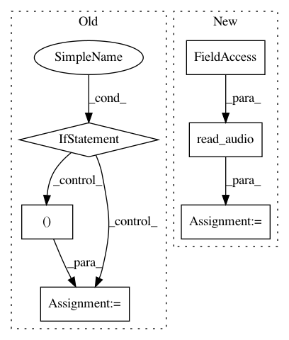

89da05ea9d6de97da9bd21949a26ceb0042ef361,pyannote/audio/features/utils.py,RawAudio,__call__,#RawAudio#Any#,56
Before Change
except IOError as e:
raise PyannoteFeatureExtractionError(e.message)
if np.any(np.isnan(y)):
uri = get_unique_identifier(item)
msg = "pysndfile output contains NaNs for file "{uri}"."
raise PyannoteFeatureExtractionError(msg.format(uri=uri))
// reshape before selecting channel
if len(y.shape) < 2:
y = y.reshape(-1, 1)
channel = item.get("channel", 1)
y = y[:, channel - 1]
sliding_window = SlidingWindow(start=0.,
duration=1./sample_rate,
step=1./sample_rate)
After Change
def __call__(self, current_file):
y, sample_rate = read_audio(current_file,
sample_rate=self.sample_rate,
mono=self.mono)
sliding_window = SlidingWindow(start=0.,
duration=1./sample_rate,
step=1./sample_rate)
In pattern: SUPERPATTERN
Frequency: 3
Non-data size: 6
Instances
Project Name: pyannote/pyannote-audio
Commit Name: 89da05ea9d6de97da9bd21949a26ceb0042ef361
Time: 2017-07-19
Author: hbredin@users.noreply.github.com
File Name: pyannote/audio/features/utils.py
Class Name: RawAudio
Method Name: __call__
Project Name: pyannote/pyannote-audio
Commit Name: 89da05ea9d6de97da9bd21949a26ceb0042ef361
Time: 2017-07-19
Author: hbredin@users.noreply.github.com
File Name: pyannote/audio/features/with_yaafe.py
Class Name: YaafeFeatureExtractor
Method Name: __call__
Project Name: pyannote/pyannote-audio
Commit Name: 89da05ea9d6de97da9bd21949a26ceb0042ef361
Time: 2017-07-19
Author: hbredin@users.noreply.github.com
File Name: pyannote/audio/features/with_librosa.py
Class Name: LibrosaFeatureExtractor
Method Name: __call__